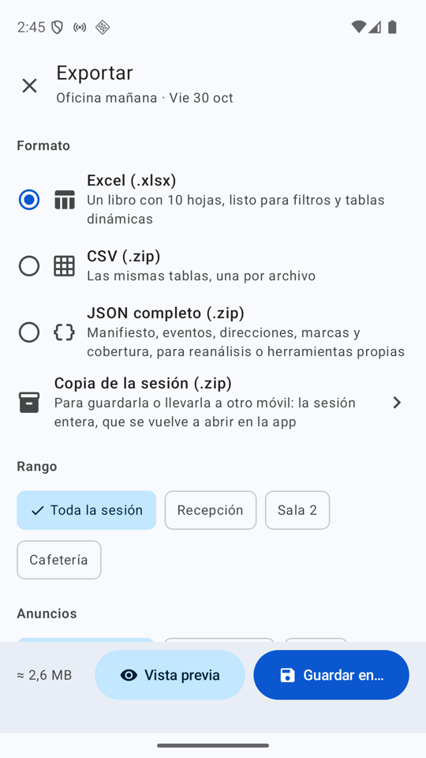

Exportar un escaneo de Bluetooth LE a Excel o CSV desde un móvil Android
Casi todas las apps que escanean BLE muestran una lista en directo y ya está. Sirve para echar un vistazo, pero no para responder preguntas como estas:
- ¿Cada cuánto anuncia mi sensor, y se corta alguna vez?
- ¿Cómo cambia la señal durante una hora?
- ¿Qué aparatos había en cada sitio donde me paré?
Para eso hace falta cada anuncio en un archivo que se pueda abrir en Excel, pandas o R. Así se consigue desde un móvil Android con Observador BLE.
1. Graba una sesión
Empieza una sesión y deja el móvil donde quieras medir. La versión gratuita graba hasta 30 minutos; con Pro, 90 minutos, 4 u 8 horas, o hasta que la pares.
Si vas cambiando de sitio, pon una marca en cada uno, como «mesa» o «sala de reuniones». La exportación las conserva, así que luego puedes filtrar por lugar.
2. Elige el formato
En el resumen de la sesión, toca Exportar:
| Formato | Qué sale | Para qué |
|---|---|---|
| Excel (.xlsx) | Una hoja por tabla, con filtros, fechas de verdad y números como números | Mirar y filtrar a mano |
| CSV | Un zip con un CSV por tabla, con ; y coma decimal, o con , estándar | Hojas de cálculo en cualquier idioma, scripts |
| JSON | Un zip con un manifiesto de tamaños y sumas sha256 | Reanalizar con código, con los bytes de cada anuncio |

La vista previa es gratis; guardar el archivo es parte de Pro.
3. Qué hay dentro
Los nombres de hojas y columnas van siempre en inglés, sea cual sea el idioma del móvil, para que las fórmulas y los scripts no fallen. La hoja Dictionary explica cada columna en el idioma de la app.
- Devices: una fila por dirección, con:
- el nombre anunciado y el fabricante declarado;
- la primera y la última vez que se oyó;
- cuántos anuncios llegaron;
- la señal mínima, mediana y máxima (
rssi_min,rssi_median,rssi_max); - las marcas en las que se oyó.
- Advertisements: cada anuncio recibido, con:
- la hora local, la hora UTC y los milisegundos desde el inicio;
- la señal en dBm;
- los bytes originales en hexadecimal;
- si el contenido cambió respecto al anterior de esa dirección.
- Groups: qué direcciones que rotan cree la app que son el mismo aparato, y por qué.
- Beacons: iBeacon, AltBeacon y Eddystone, con sus identificadores, y la batería y la temperatura si envían telemetría.
- GATT: lo que la app leyó de los servicios de un aparato, si le pediste que se conectara.
- Marks y Events: los lugares que marcaste, y las pausas y los cortes con su causa, para que un hueco en los datos nunca sea un misterio.
4. Un primer análisis en Python
import pandas as pd
ads = pd.read_excel("btobserver_sesion.xlsx", sheet_name="Advertisements")
dev = pd.read_excel("btobserver_sesion.xlsx", sheet_name="Devices")
# Mi sensor: intervalo entre anuncios y señal a lo largo del tiempo
mio = dev.loc[dev["advertised_name"] == "MiSensor", "id"].iloc[0]
s = ads[ads["id"] == mio].sort_values("ms_from_start")
huecos = s["ms_from_start"].diff() / 1000
print(huecos.describe()) # intervalo mediano en segundos y el hueco más largo
s.plot(x="date_time", y="rssi_dbm")Compartir un archivo sin dar direcciones
Activa los seudónimos al exportar. Las direcciones, los nombres anunciados y los identificadores de balizas pasan a ser DIR-0001, NAME-001 y BEACON-001, los mismos en todo el archivo, y tus notas no salen. Así puedes adjuntarlo a un informe de error o a un foro. Sigue sin ser anónimo, y el archivo lo dice.
Observador BLE es gratis en Google Play (Android 13 o posterior; en la UE, Estados Unidos, Reino Unido, Canadá y Australia), con un Pro de pago único para sesiones largas y exportaciones.